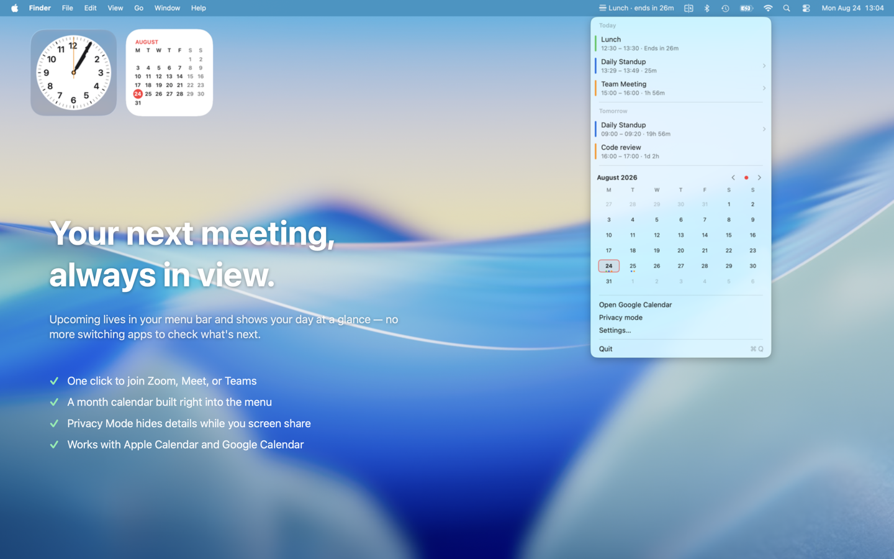
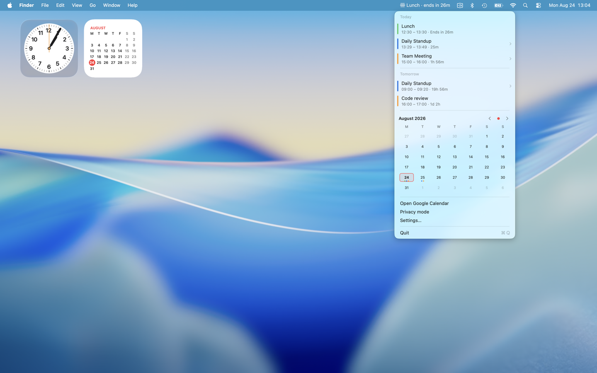
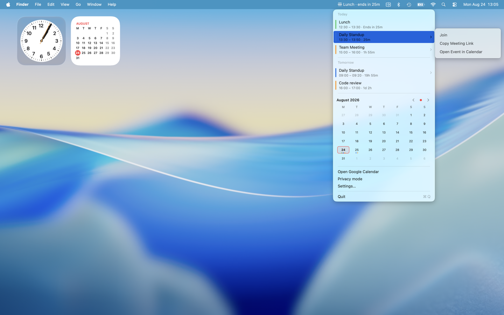

Upcoming
Your calendar, right in the menu bar. See smart countdowns, browse your month, join meetings fast, and protect event details with Privacy mode.
Upcoming is a lightweight, native macOS menu bar app that keeps your Apple Calendar events, meeting links, and schedule within easy reach. See what’s happening now, know what’s coming next, and join meetings without opening the full Calendar app.
View on the Mac App Store
Privacy Policy (Web)
Privacy Policy (Markdown)
Features
- Smart Menu Bar Countdown: See when your next event starts with “in 10m,” or how long remains in an ongoing event with “ends in 10m.”
- Native Calendar Dropdown: Open a clean, date-grouped agenda using standard macOS colors, keyboard behavior, and side-opening menus.
- Mini-Calendar: Browse months, see calendar-colored event indicators, jump to today, and open any date directly in Calendar.
- Detailed Event Rows: Quickly scan event titles, times, locations, countdowns, and source-calendar colors.
- Join and Rejoin Meetings: Detects Zoom, Google Meet, Microsoft Teams, Webex, and GoToMeeting links. Join upcoming or ongoing meetings, or rejoin recently finished meetings during a configurable grace period.
- Fast Event Actions: Access meeting links, copy links, and open events from native submenus. Events without links open directly in Calendar.
- Privacy Mode: Hide event titles, locations, calendar names, and meeting links while presenting or sharing your screen. Times and countdowns remain visible.
- Flexible Event Filters: Choose visible calendars, show or hide tentative, declined, and free events, and display up to 10, 15, or 20 events across the next 3, 5, or 7 days.
- Customizable Menu: Place the mini-calendar above or below your events, hide it entirely, choose your countdown window, and open either Apple Calendar or Google Calendar.
- Native macOS Experience: Built with Swift, SwiftUI, and AppKit for responsive performance, system appearance support, and low resource usage.
- Start at Login: Optionally launch Upcoming automatically when you sign in to your Mac.
Privacy-First
Upcoming runs entirely on your Mac. It uses Apple’s native EventKit framework to access calendars you have granted permission to view and operates within the macOS App Sandbox. Your calendar data is never collected, stored on external servers, or transmitted to third parties. Upcoming contains no accounts or usage analytics.
Requirements
- macOS 13.0 (Ventura) or later
- Calendar access permission
Screenshots


